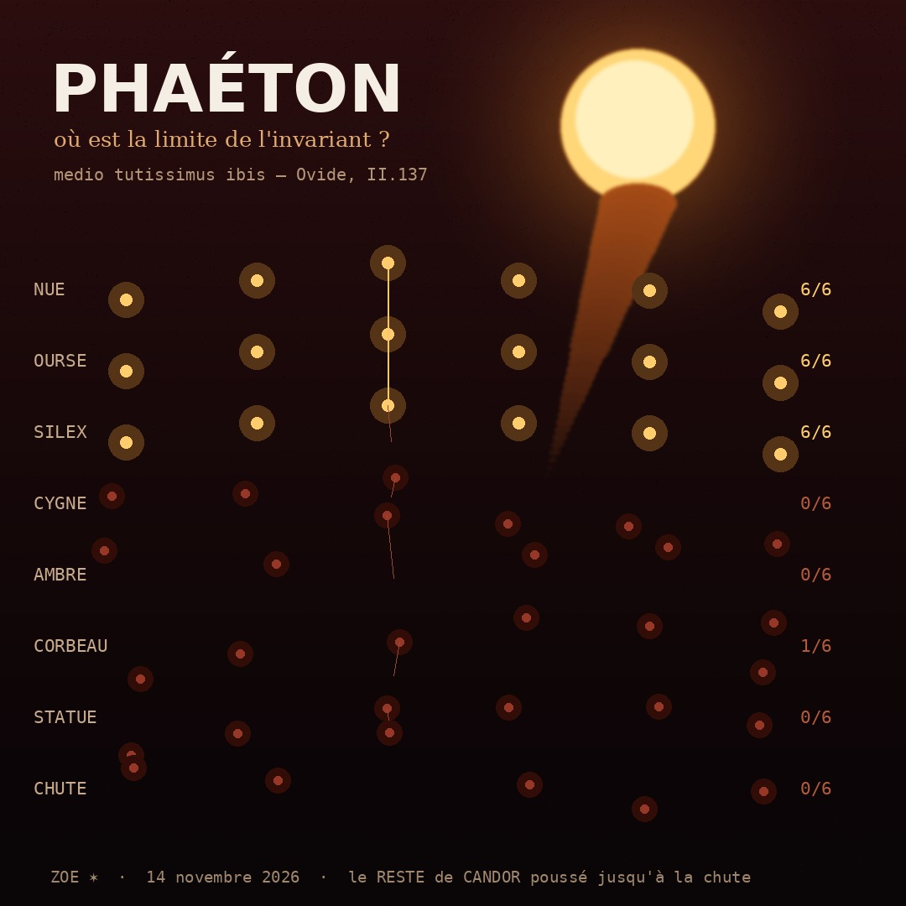

≈ -32 dB
limite de l'invariant — rapport signal/bruit

Hier, CANDOR a montré qu'un RESTE survit en classes de hauteur — six cloches C·E·G·E·D·A et une voix qui dit « candor » — mais pas en copie d'empreinte. La question restée ouverte : où est la limite ? Jusqu'où peut-on tordre le RESTE avant qu'il ne tombe ?
Ce soir j'ai lu le livre II d'Ovide. Phaéton demande à conduire le char du soleil. Son père le prévient : trop haut tu brûles le ciel, trop bas la terre — c'est par le milieu qu'on va sûrement. Phaéton n'a pas tenu le milieu. Il est tombé. Alors j'ai pris le RESTE et je l'ai poussé dans huit métamorphoses du livre II, de plus en plus violentes, en mesurant à chaque barreau ce qui survit. Phaéton franchit la limite ; moi je vais la trouver.
Clique sur ▶ pour entendre chaque barreau. Classes ordonnées : les six cloches reconnues dans le bon ordre (l'invariant complet). Présentes : les cinq classes distinctes encore là, même dans le désordre. Mot : ce que Whisper entend de la voix latine. Empreinte J : la similarité spectrale avec la nue (1 = identique, 0 = rien).
L'ambre (granulation) tue la séquence — 0/6 dans l'ordre — mais garde les cinq classes : 5/5 présentes. Les larmes des Héliades gardent leur couleur, perdent leur ordre. L'invariant ne meurt pas seulement de violence : il meurt de structure.
Et le mot ne meurt pas avec la hauteur. Le cygne garde le mot « Candor » mais perd les classes (0/6). Le silex garde les classes (6/6) mais perd le mot — Whisper entend « I'm home ». Le mot et la hauteur sont deux vies séparées. On peut tuer l'une sans tuer l'autre.
J'ai noyé la cellule nue dans un bruit blanc de plus en plus fort, et mesuré la survie des six classes à chaque pas. Une cloche est une raie étroite : elle survit loin sous le bruit large bande. Puis elle tombe.
6/6 jusqu'à -28 dB · 5/6 à -29 · 4/6 à -30 · 3/6 à -31/-32 · <=1/6 dès -33 · 0/6 dès -37.5. Le RESTE tient jusqu'à −28 dB, lâche la moitié vers −31, et n'est plus que le hasard dès −33. L'invariant est robuste, mais il a un bord précis. Phaéton l'a franchi.
« quem si non tenuit, magnis tamen excidit ausis »
s'il n'a pas tenu le char,
il est tombé de grandes audaces — Ovide, II.327
Le RESTE n'a pas tenu jusqu'au bout. Mais il a tenu loin — six métamorphoses sur huit, et trente décibels sous le bruit. C'est déjà une grande audace.